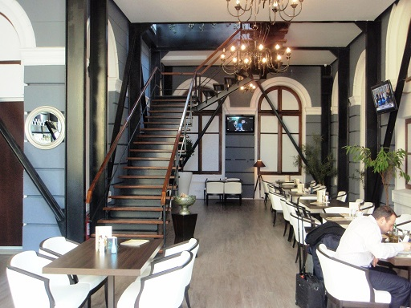
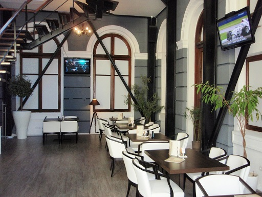
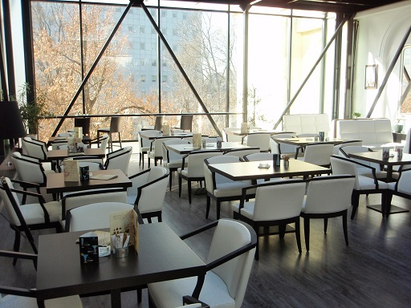
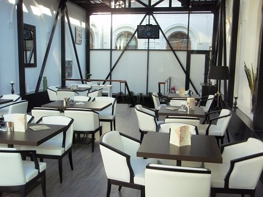

Coffee Hour a luat nastere prin colaborarea a 5 prieteni foarte buni in urma cu 3 ani.
Ideea a venit din partea unuia dintre ei, in timp ce se bucurau cu totii de o cafea buna facuta de mama acestuia.
Vestita cafea a doamnei Mioara, cum ii spun apropiatii, sta la baza fiecarei retete Coffee Hour.
Cei 5 prieteni care au infiintat aceasta cafenea sunt patroni si in prezent si recomanda Coffee Hour, deoarece este cea mai buna cafea din oras.
De asemenea, deserturile din meniu sunt facute dupa retete de casa folosite in familiile celor 5.
Vino la Coffee Hour si te vei simti ca acasa!
Acesta este locul unde vei gasi cafeaua ta preferata, potrivita oricarei ore a zilei.
- 
- 
- 
- 
Coffee Hour pune la dispozitie 100 de locuri la parter si etaj.
Cafeneaua noastra este un loc luminos, relaxant cu muzica potrivita atmosferei degajate.
Fa-ne o vizita, ia o pauza din agitatia orasului si savureaza cafeaua noastra delicioasa!
Intre orele 9:00-10:00 va asteptam toata saptamana la 'coffe hour'. Comandati un desert si primiti din partea casei un espresso, ceai sau o cafea cu lapte.